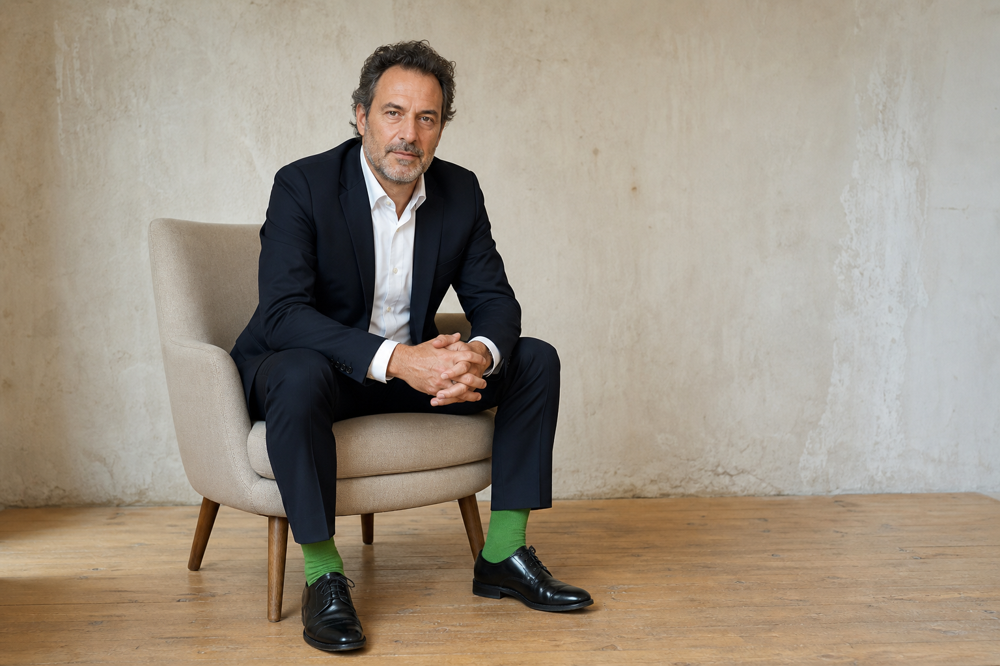
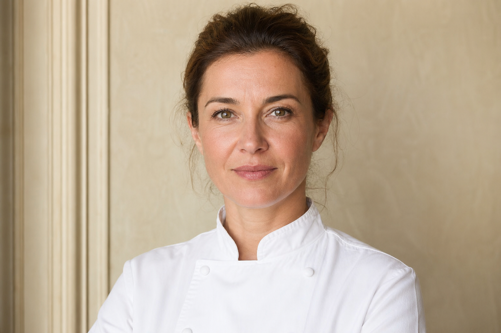
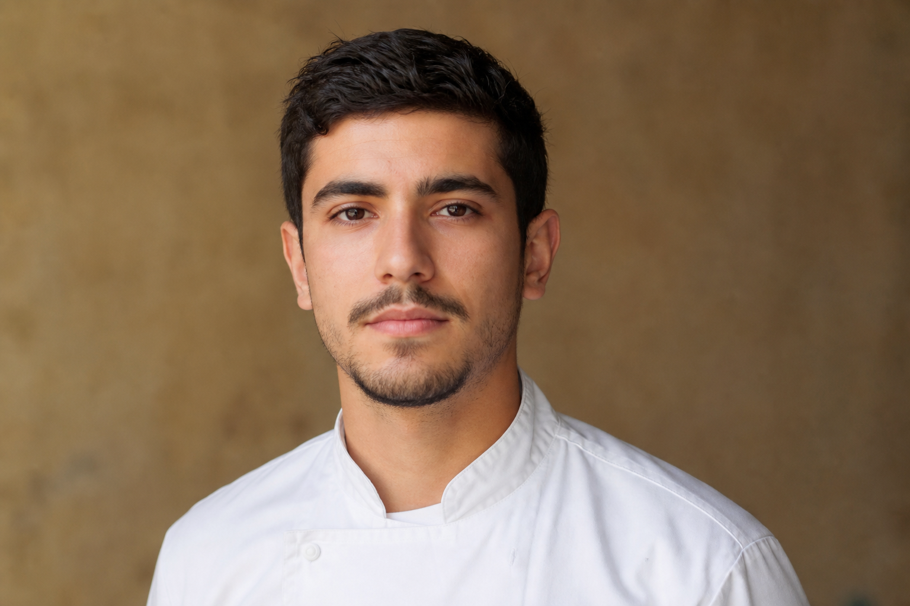
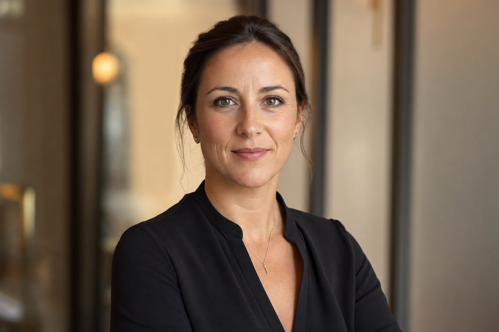
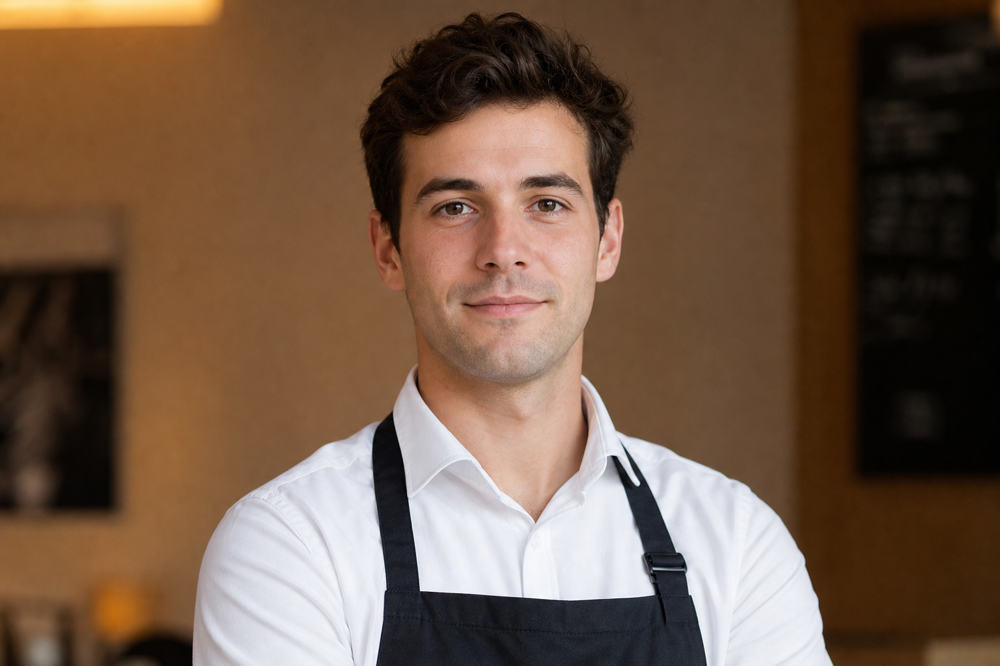
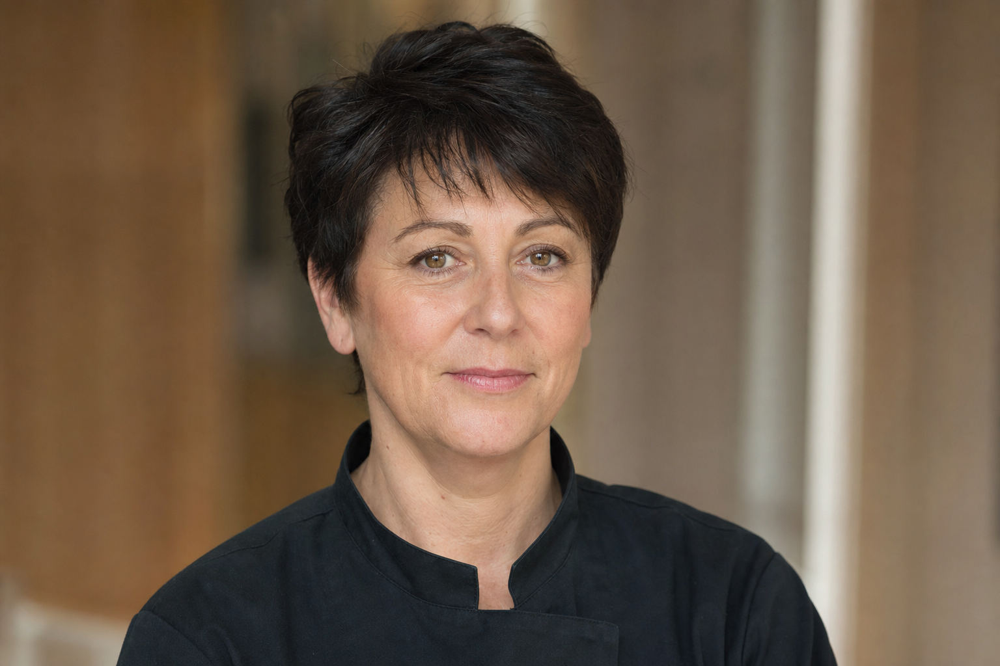

Six personnes font tourner la maison. Voici leur parcours, leur rôle et leur
rémunération brute mensuelle pour un temps plein.

Gérant
Jean-Marc Duval
54 ans — fondateur de la maison
- Licence de gestion, Université Paris-Dauphine (1994)
- Directeur adjoint, restaurant Le Comptoir, Paris (1995–2005)
- Gérant, brasserie Les Deux Gares, Paris (2005–2017)
- Fondateur et gérant, L'imprévisible (depuis 2018)
Salaire brut : 3 200 € / mois

Chef de cuisine
Camille Rousset
42 ans — dans la maison depuis l'ouverture
- CAP cuisine, Lycée hôtelier de Talence (2002)
- Commis puis chef de partie, Le Saint-James, Bouliac (2003–2009)
- Second de cuisine, Auberge du Pont, Lyon (2009–2016)
- Chef de cuisine, L'imprévisible (depuis 2018)
Salaire brut : 3 400 € / mois

Commis de cuisine
Yanis Belkacem
24 ans — dans la maison depuis 2022
- CAP cuisine, CFA de Paris (2020)
- Apprentissage, Brasserie Lipp, Paris (2018–2020)
- Commis, L'imprévisible (depuis 2022)
Salaire brut : 2 100 € / mois

Cheffe de salle
Sophie Marchand
38 ans — dans la maison depuis l'ouverture
- BTS hôtellerie-restauration, Lycée Guillaume-Tirel, Paris (2008)
- Cheffe de rang, Hôtel Lutetia, Paris (2009–2017)
- Cheffe de salle, L'imprévisible (depuis 2018)
Salaire brut : 2 800 € / mois

Serveur
Thomas Lefèvre
29 ans — dans la maison depuis 2021
- Bac pro service, Lycée Jean-Drouant, Paris (2015)
- Serveur, Café de la Paix, Paris (2016–2021)
- Serveur, L'imprévisible (depuis 2021)
Salaire brut : 2 050 € / mois

Plonge & entretien
Aline Dubois
51 ans — dans la maison depuis 2019
- Plongeuse et agent d'entretien, restauration collective (2005–2019)
- Plonge et entretien, L'imprévisible (depuis 2019)
Salaire brut : 1 950 € / mois